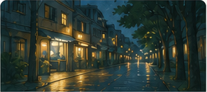
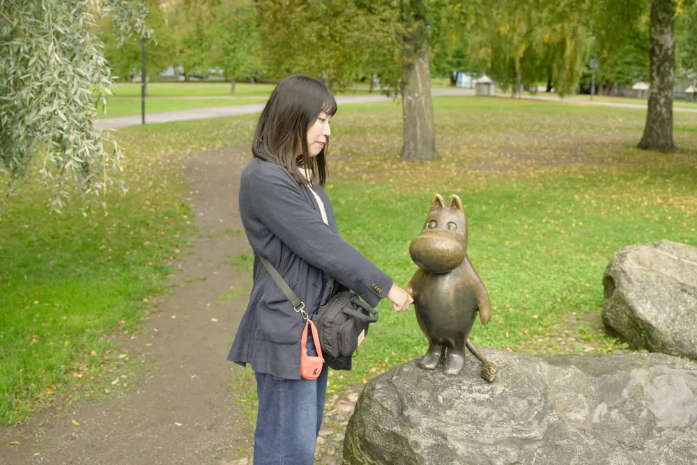
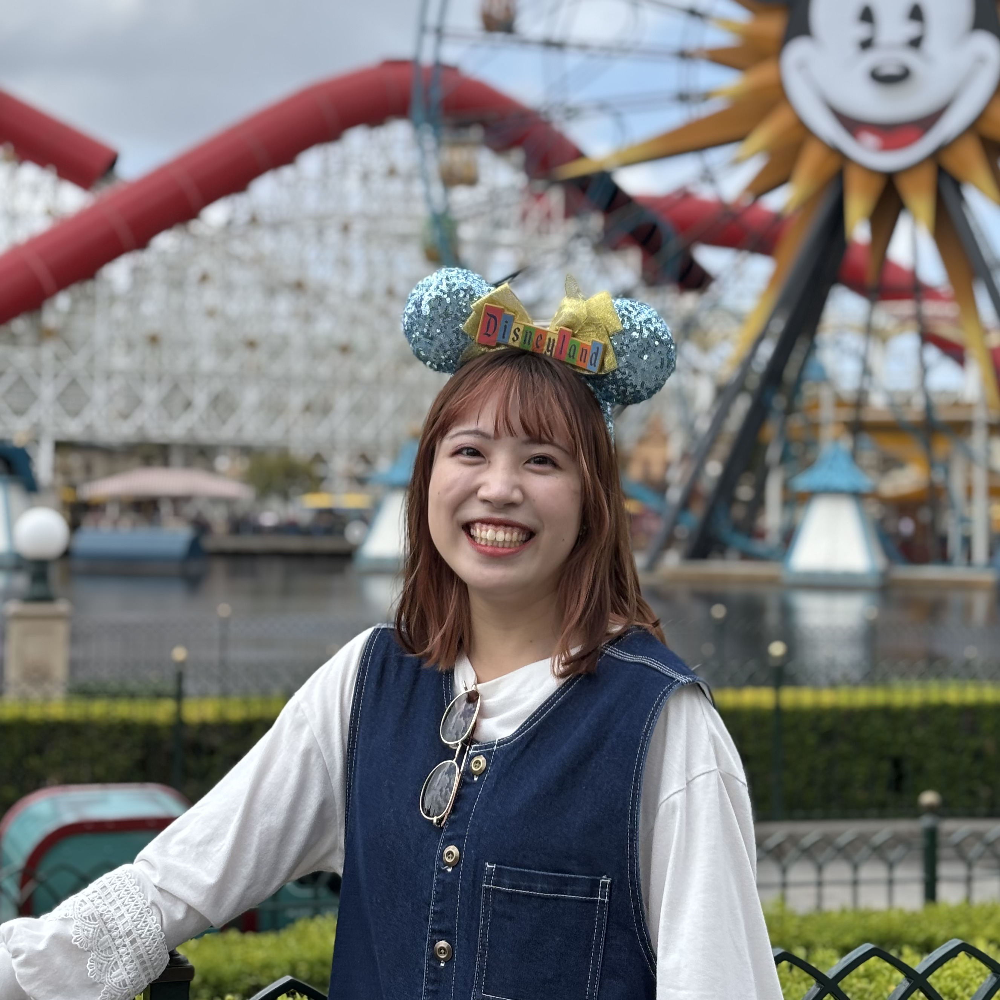
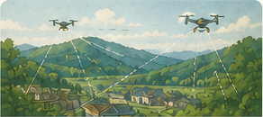
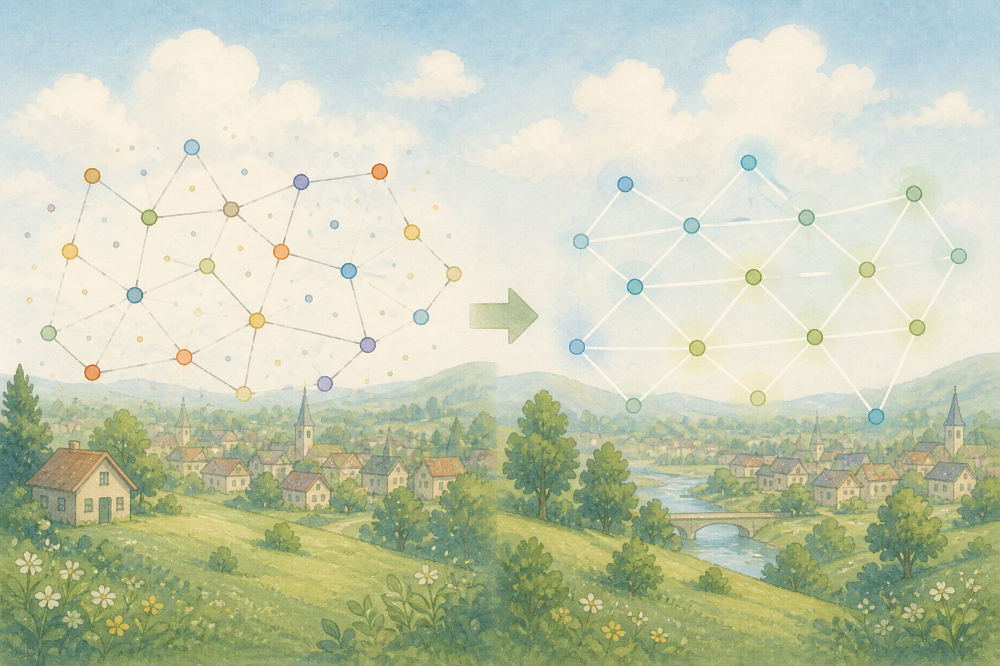

画像処理
画像処理のためのデータセット作成やネットワーク構築の研究をしています．


大阪大学 大学院工学研究科 電気電子情報通信工学専攻 博士前期課程
研究

画像処理のためのデータセット作成やネットワーク構築の研究をしています．

現実世界の問題を数理最適化を使って解いています．

グラフ構造をもつデータに対して，信号復元・平滑化・構造活用に基づく処理手法の研究をしてます．
受賞
すべて見る →電子情報通信学会 無線通信システム研究会
電子情報通信学会 信号処理研究専門委員会
最新の業績
すべて見る →経歴
連絡先
Email: r.kaneko(at_no_spam)msp-lab.org 〒565-0871 大阪府吹田市山田丘2-1